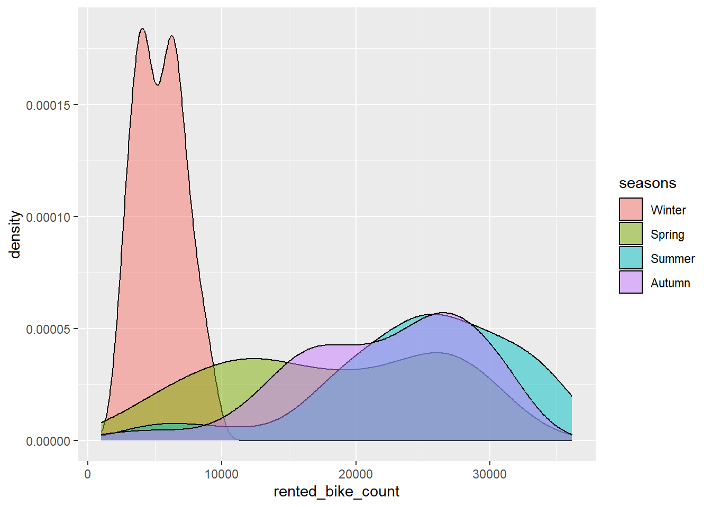
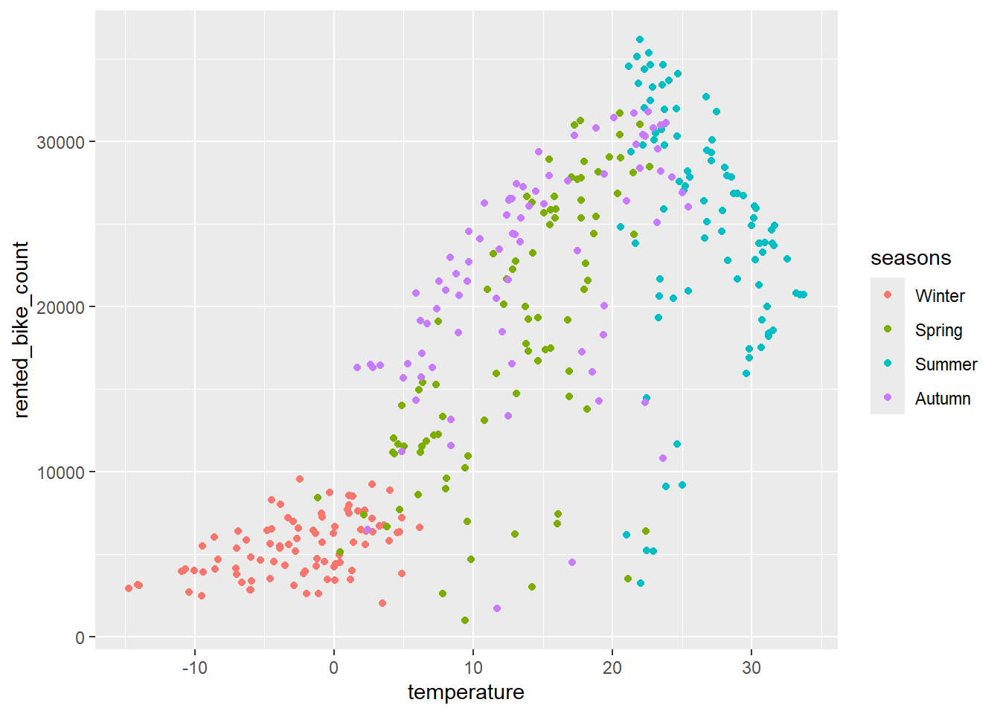
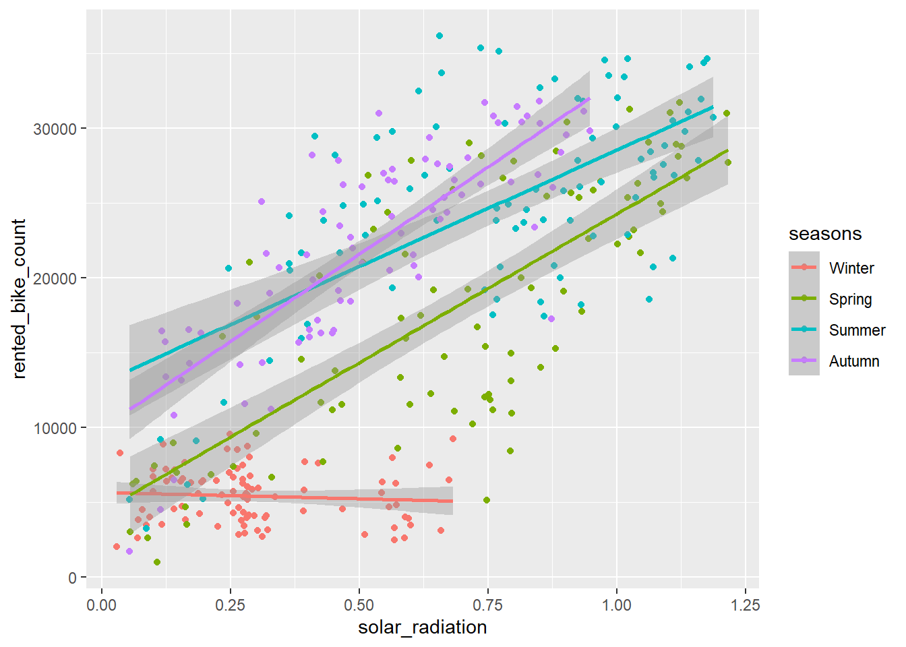
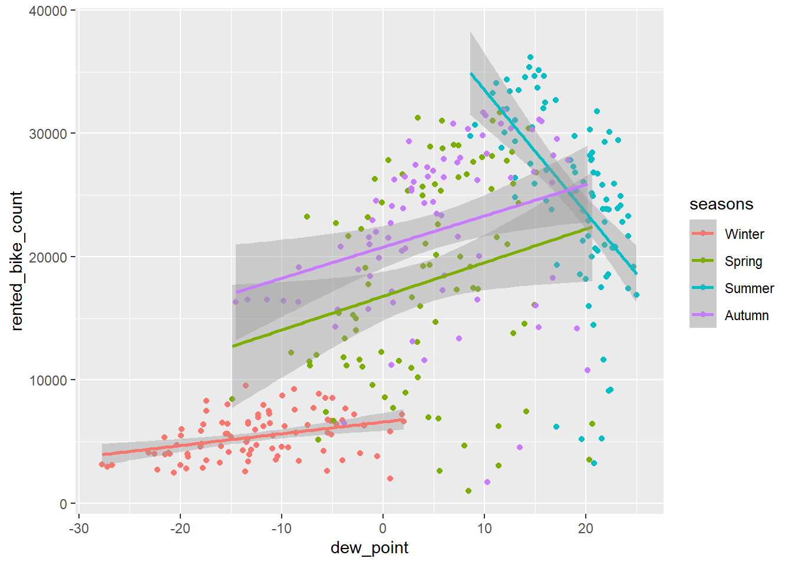
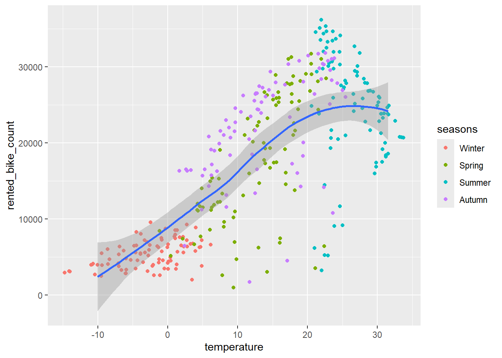
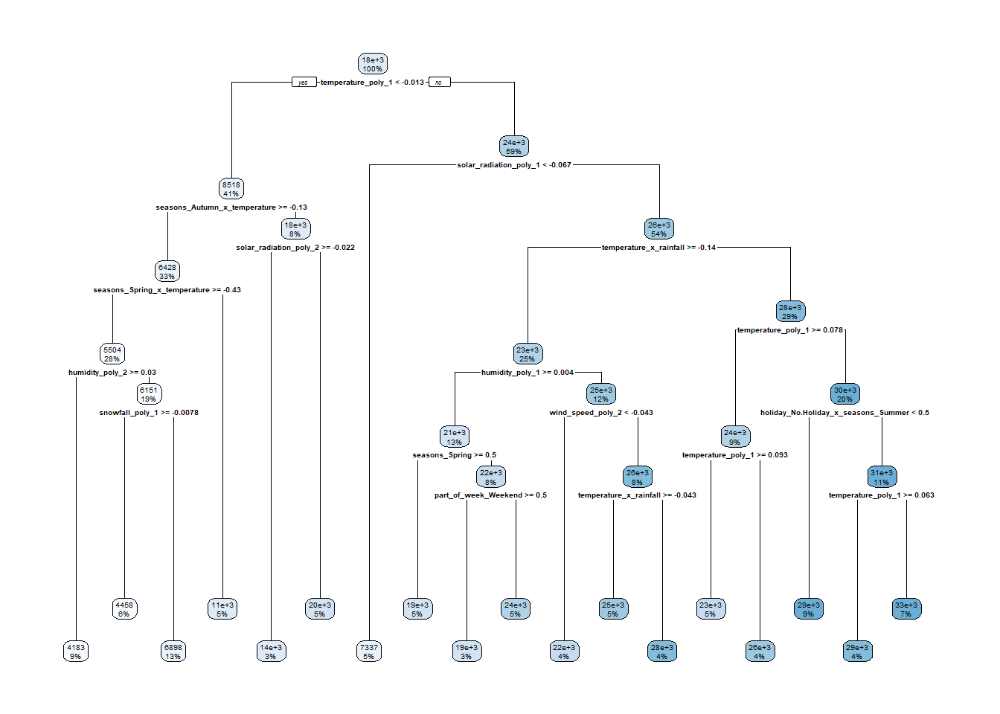

Rows: 8760 Columns: 14
── Column specification ────────────────────────────────────────────────────────
Delimiter: ","
chr (4): Date, Seasons, Holiday, Functioning Day
dbl (10): Rented Bike Count, Hour, Temperature(°C), Humidity(%), Wind speed ...
ℹ Use `spec()` to retrieve the full column specification for this data.
ℹ Specify the column types or set `show_col_types = FALSE` to quiet this message.
Look at structure, see if there are columns that are an unexpected data type based on the values
date is char, should be changed to date
humidity values are stored in a way that makes sense for display (e.g. 37 for 37%), but would need to be divided by 100 if used for computations (unless the computation only involves itself as a variable, e.g. taking the average humidity level)
seasons, holiday, and functioning_day are character variables that need to be recast as factors
`summarise()` has grouped output by 'date', 'seasons'. You can override using
the `.groups` argument.
bike_rollup
# A tibble: 353 × 12
# Groups: date, seasons [353]
date seasons holiday rented_bike_count rainfall snowfall temperature
<date> <fct> <fct> <dbl> <dbl> <dbl> <dbl>
1 2017-12-01 Winter No Holiday 9539 0 0 -2.45
2 2017-12-02 Winter No Holiday 8523 0 0 1.32
3 2017-12-03 Winter No Holiday 7222 4 0 4.88
4 2017-12-04 Winter No Holiday 8729 0.1 0 -0.304
5 2017-12-05 Winter No Holiday 8307 0 0 -4.46
6 2017-12-06 Winter No Holiday 6669 1.3 8.6 0.0458
7 2017-12-07 Winter No Holiday 8549 0 10.4 1.09
8 2017-12-08 Winter No Holiday 8032 0 0 -3.82
9 2017-12-09 Winter No Holiday 7233 0 0 -0.846
10 2017-12-10 Winter No Holiday 3453 4.1 32.5 1.19
# ℹ 343 more rows
# ℹ 5 more variables: humidity <dbl>, wind_speed <dbl>, visibility <dbl>,
# dew_point <dbl>, solar_radiation <dbl>
EDA Part 2
Repeat EDA for the new rollup
Summary stats
psych::describe(bike_rollup)
Warning in FUN(newX[, i], ...): no non-missing arguments to min; returning Inf
Warning in FUN(newX[, i], ...): no non-missing arguments to max; returning -Inf
vars n mean sd median trimmed mad min
date 1 353 NaN NA NA NaN NA Inf
seasons* 2 353 2.46 1.11 2.00 2.46 1.48 1.00
holiday* 3 353 1.95 0.21 2.00 2.00 0.00 1.00
rented_bike_count 4 353 17485.31 9937.16 18563.00 17406.91 13811.90 977.00
rainfall 5 353 3.58 11.79 0.00 0.62 0.00 0.00
snowfall 6 353 1.86 8.80 0.00 0.00 0.00 0.00
temperature 7 353 12.78 11.72 13.74 13.07 13.91 -14.74
humidity 8 353 58.17 14.87 57.17 57.68 14.89 22.25
wind_speed 9 353 1.73 0.60 1.66 1.66 0.50 0.66
visibility 10 353 1434.01 491.16 1557.75 1482.65 564.44 214.29
dew_point 11 353 3.95 12.99 4.61 4.54 14.97 -27.75
solar_radiation 12 353 0.57 0.32 0.56 0.56 0.41 0.03
max range skew kurtosis se
date -Inf -Inf NA NA NA
seasons* 4.00 3.00 0.03 -1.34 0.06
holiday* 2.00 1.00 -4.20 15.71 0.01
rented_bike_count 36149.00 35172.00 -0.04 -1.41 528.90
rainfall 95.50 95.50 4.88 26.81 0.63
snowfall 78.70 78.70 5.83 36.57 0.47
temperature 33.74 48.48 -0.21 -0.96 0.62
humidity 95.88 73.62 0.26 -0.34 0.79
wind_speed 4.00 3.34 1.08 1.29 0.03
visibility 2000.00 1785.71 -0.62 -0.75 26.14
dew_point 25.04 52.79 -0.30 -0.88 0.69
solar_radiation 1.22 1.19 0.18 -1.09 0.02
Noting that the mean for rented_bike_count is now a lot higher, which is expected after removing the non-functioning days, and also after taking the sum for all hours for a specific day and then taking the average of that
# A tibble: 1 × 1
`mean(daily_bikes)`
<dbl>
1 17485.
Plots & Correlation
Density plot for daily bikes
g <-ggplot(bike_rollup, aes(x = rented_bike_count, fill = seasons))g +geom_density(alpha =0.5)

I expected to see fewer bikes rented per day during the winter, but the density plot shows it’s much more of a pronounced difference than I thought. Interesting that it rarely broke 10K bikes in the winter, whereas the that would be an unusually low day for summer and autumn. Also kind of interesting that the summer and spring patterns look almost bimodal, so I will be curious to see if there are correlations among the weather-related variables that may explain that.
Dew point, solar radiation, and temperature all seem to have a relatively strong positive correlation to bikes rented. Dew point is also very strongly correlated to temperature, so it makes sense they would both show high correlation to bikes rented (as opposed to only one of them showing a correlation). Solar radiation is interesting, because it is most highly correlated to rented bike count, and only weakly correlated to temperature, and does not show much of a linear relationship to anything else. It seems a bit odd that solar radiation would be related to the rented bike count, while simultaneously showing very little linear relationship to rainfall and snowfall, considering solar radiation may be impacted significantly by precipitation.
Scatter plots
Running scatter plots on the most highly correlated variables
g <-ggplot(bike_rollup, aes(y = rented_bike_count, x = temperature))g +geom_point(aes(color = seasons))

Kind of cool, can see clear distinctions in the rented counts vs temperature between the different seasons
g <-ggplot(bike_rollup, aes(y = rented_bike_count, x = solar_radiation, color = seasons))g +geom_point() +geom_smooth(method ="lm")
`geom_smooth()` using formula = 'y ~ x'

Definitely can still see the correlation between solar radiation and bike counts, but there’s less of a clear pattern to the seasons
g <-ggplot(bike_rollup, aes(y = rented_bike_count, x = dew_point, color = seasons))g +geom_point() +geom_smooth(method ="lm")
`geom_smooth()` using formula = 'y ~ x'

Looks a lot like the temperature vs rented bikes scatter plot, which kind of makes sense since the dew point is so closely related to the temperature
Split the Data
75/25 training to test split
# create the splitbike_split <-initial_split(bike_rollup, prop =0.75, strata = seasons)# create the training and test data setsbike_train <-training(bike_split)bike_test <-testing(bike_split)
10-fold CV split
# split training set into 10 groupsbike_10_fold <-vfold_cv(bike_train, 10)
Fitting MLR Models
Data Preprocessing
Create 3 recipes to preprocess the data for use in MLR models
Recipe 1
define role for date as an ID column so it’s not included in the model, but will be retained in the data set
add new factor that determines whether the day of the week for each date falls on the weekend or during the week
standardize numeric variables, except for the outcome
bike_rec_1 <-recipe(rented_bike_count ~ ., data = bike_train) |>update_role(date, new_role ="ID") |>step_date(date, features =c("dow")) |>step_mutate(part_of_week =factor(if_else(date_dow %in%c("Sat", "Sun"),"Weekend","Weekday"),levels =c("Weekday", "Weekend"))) |>step_rm(date_dow) |>step_normalize(all_numeric(), -all_outcomes()) |>step_dummy(seasons, holiday, part_of_week)# view data to make sure it looks okaybike_rec_1 |>prep(training = bike_train) |>bake(bike_train)
On the first pass, I did not have the step_corr in the preprocessing, but the fit_resamples() generated a warning that stated: “prediction from rank-deficient fit; consider predict(., rankdeficient=”NA”). There were issues with some computations A: x1”.
First, I tried step_zv(), since the tidymodel tutorial had stated that if there are dummy variables with low-frequency values that don’t occur in the training data, then it’s possible for some of the downstream functions to generate warnings. That didn’t work.
From other google results, I didn’t find much about the exact warning, but there was a really similar one that apparently can happen when there are variables with really high correlation. Dew point and temperature are very highly correlated, so I decided to use step_cor to address this, and it worked.
Note: On the quadratic step, I initially tried to do step_poly(all_numeric_predictors()), but got an error that said “‘degree’ must be less than number of unique points”. A post on Stack Overflow states this is because there must be columns that don’t have enough unique values. Since the degree is 2, the variables included in step_poly must have at least 3 unique values. All the dummy variables had only 2 unique values. Moving step_poly before step_interact only produced more errors, so I decided to just list out the original predictor variables.
# A tibble: 2 × 6
.metric .estimator mean n std_err .config
<chr> <chr> <dbl> <int> <dbl> <chr>
1 rmse standard 3375. 10 376. Preprocessor1_Model1
2 rsq standard 0.879 10 0.0322 Preprocessor1_Model1
Fit on Entire Training Data
I ran the previous code multiple times, and the RMSE for each model was variable. Each of the models had the lowest RMSE at least once, but I feel that the second model seems to come in lowest pretty often, so that’s the one I went with.
# A tibble: 2 × 4
.metric .estimator .estimate .config
<chr> <chr> <dbl> <chr>
1 rmse standard 4009. Preprocessor1_Model1
2 rsq standard 0.825 Preprocessor1_Model1
Fit model on the test data
# workflow for 2nd model#lm_fit <- fit(bike_wfl_2, bike_train)# prediction for bikes rented on the test setbike_test_res <- bike_wfl_2 |>fit(bike_train) |>predict(new_data = bike_test)bike_test_res
Really big coefficients, which might be expected since all numeric predictors were standardized, but the outcome was not. To make sure, I am going to plot the predictions over the original data to make sure it looks okay.
Plot predictions from the test data against the temperature values in that set, since temperature seems to be the most significant predictor
# take predictions already made, and combine with temperature valuesmlm_points <- bike_test_res[".pred"] |>bind_cols(bike_test |>ungroup() |>select(temperature))# plot original data, with the model line overlayg <-ggplot(bike_rollup, aes(x = temperature, y = rented_bike_count)) g +geom_point(aes(color = seasons)) +geom_smooth(data = mlm_points, aes(x = temperature, y = .pred))
`geom_smooth()` using method = 'loess' and formula = 'y ~ x'

Hey, it looks pretty good!
Homework 9
Note:I realized only after submitting HW8 that I was looking at the wrong metric when determining which model was best. I was looking at the standard error of the RMSE rather than the mean RMSE. This led me to select Model 2 instead of Model 3. I am going to complete HW9 by switching to Model 3.
Best MLR Model from Last Week
Model 3
# prediction for bikes rented on the test setbike_test_res <- bike_wfl_3 |>fit(bike_train) |>predict(new_data = bike_test)# add in the truth valuesbike_test_res <- bike_test_res |>bind_cols(bike_test |>ungroup() |>select(rented_bike_count))# compare to predicted values - RMSE and MAEMLR_metrics <-bind_rows(bike_test_res |>rmse(truth = rented_bike_count, estimate = .pred), bike_test_res |>mae(truth = rented_bike_count, estimate = .pred)) |>bind_cols(Model =rep("MLR Model", 2)) |>select(Model, everything())MLR_metrics
# A tibble: 2 × 4
Model .metric .estimator .estimate
<chr> <chr> <chr> <dbl>
1 MLR Model rmse standard 3536.
2 MLR Model mae standard 2549.
Redo plot on Model 3 predictions
# take predictions already made, and combine with temperature valuesmlm_points <- bike_test_res[".pred"] |>bind_cols(bike_test |>ungroup() |>select(temperature))# plot original data, with the model line overlayg <-ggplot(bike_rollup, aes(x = temperature, y = rented_bike_count)) g +geom_point(aes(color = seasons)) +geom_smooth(data = mlm_points, aes(x = temperature, y = .pred))
`geom_smooth()` using method = 'loess' and formula = 'y ~ x'
# run the tuningtree_fits <- tree_wkf |>tune_grid(resamples = bike_10_fold,grid = tree_grid)# return the best parameterstree_best_params <- tree_fits |>select_best(metric ="rmse")tree_best_params
# finalize workflowtree_final_wkf <- tree_wkf |>finalize_workflow(tree_best_params)# fit to entire training datatree_final_fit <- tree_final_wkf |>last_fit(bike_split)# extracttree_final_model <-extract_workflow(tree_final_fit)# plot the final fittree_final_model |>extract_fit_engine() |> rpart.plot::rpart.plot(roundint =FALSE)

Look at metrics RMSE and MAE on the test data
# predictions, plus the truth valuestree_predict <- tree_final_wkf |>fit(bike_train) |>predict(bike_test) |>bind_cols(bike_test |>ungroup() |>select(rented_bike_count))# compare to predicted valuestree_metrics <-bind_rows(tree_predict |>rmse(truth = rented_bike_count, estimate = .pred), tree_predict |>mae(truth = rented_bike_count, estimate = .pred)) |>bind_cols(Model =rep("Regression Tree", 2)) |>select(Model, everything())tree_metrics
# A tibble: 2 × 4
Model .metric .estimator .estimate
<chr> <chr> <chr> <dbl>
1 Regression Tree rmse standard 3986.
2 Regression Tree mae standard 2849.
Bagged Tree Model
Define model, using regression since the response variable is numeric, continuous
# finalize workflowbag_final_wkf <- bag_wkf |>finalize_workflow(bag_best_params)# fit on training setbag_final_fit <- bag_final_wkf |>last_fit(bike_split)bag_final_fit |>collect_metrics()
# A tibble: 2 × 4
.metric .estimator .estimate .config
<chr> <chr> <dbl> <chr>
1 rmse standard 3269. Preprocessor1_Model1
2 rsq standard 0.885 Preprocessor1_Model1
# finalize workflowrf_final_wkf <- rf_wkf |>finalize_workflow(rf_best_params)# fit to the training setrf_final_fit <- rf_final_wkf |>last_fit(bike_split)rf_final_fit |>collect_metrics()
# A tibble: 2 × 4
.metric .estimator .estimate .config
<chr> <chr> <dbl> <chr>
1 rmse standard 3030. Preprocessor1_Model1
2 rsq standard 0.905 Preprocessor1_Model1
# A tibble: 10 × 4
Model .metric .estimator .estimate
<chr> <chr> <chr> <dbl>
1 MLR Model rmse standard 3536.
2 MLR Model mae standard 2549.
3 LASSO Model rmse standard 4242.
4 LASSO Model mae standard 3227.
5 Regression Tree rmse standard 3986.
6 Regression Tree mae standard 2849.
7 Bagged Tree rmse standard 3585.
8 Bagged Tree mae standard 2668.
9 Random Forest rmse standard 3075.
10 Random Forest mae standard 2284.
Random Forest model seems to be the overall winner, for both RMSE and MAE
Fit to Entire Data Set
# predictions, plus the truth valuesrf_predict_final <- rf_final_wkf |>fit(bike_train) |>predict(bike_rollup) |>bind_cols(bike_rollup |>ungroup() |>select(rented_bike_count))# compare to predicted valuesfinal_metrics <-bind_rows(rf_predict_final |>rmse(truth = rented_bike_count, estimate = .pred), rf_predict_final |>mae(truth = rented_bike_count, estimate = .pred)) |>bind_cols(Model =rep("Random Forest Final", 2)) |>select(Model, everything())final_metrics
# A tibble: 2 × 4
Model .metric .estimator .estimate
<chr> <chr> <chr> <dbl>
1 Random Forest Final rmse standard 1872.
2 Random Forest Final mae standard 1279.
Final model performed even better on the full data than on the training!
# add temperature column to predictions on full data setrf_points <- rf_predict_final |>bind_cols(bike_rollup["temperature"])# plot original data, with the random forest predictions as overlayg <-ggplot(bike_rollup, aes(x = temperature, y = rented_bike_count)) g +geom_point(aes(color = seasons)) +geom_line(data = rf_points, aes(x = temperature, y = .pred))